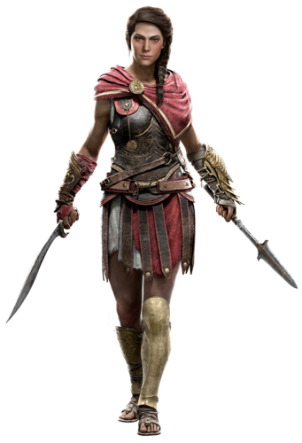

.
.
Kassandra was born in Sparta to Myrrine, the daughter of the late King Leonidas I and the philosopher Pythagoras, whose lifespan was extended due to the Staff of Hermes Trismegistus he possessed. Shortly after her birth, her father departed from Sparta on a quest to learn more about the Isu and the staff his possessed. As such, Myrrine was left to raise Kassandra alone. As a baby, Myrrine brought Kassandra to the acting Pythia, who proclaimed that the child showed a lot of promise. At one point, Myrrine later met and married the Spartan general Nikolaos who, despite Kassandra not being her own flesh and blood, raised her as one of his own. Kassandra would later gain a younger brother named Alexios.Owing to her lineage as being a granddaughter of Leonidas, great hopes were placed upon her to live up to the strength and valor of Leonidas. As such Kassandra was trained to fight at a young age by Nikolaos. While training in the woods near Sparta as a child, Kassandra was presented with the broken Spear of Leonidas, an Isu weapon, as an heirloom by her mother. Afterwards, Kassandra wouldn't let go of the spear, even in her sleep, telling her parents that she needed it "to fight the monsters in [her] dreams."In 446 BCE, the Pythia Praxithea[8] at Sanctuary of Delphi prophesied at the decree of the Cult of Kosmos that Kassandra's younger brother, the baby Alexios, would bring about the fall of Sparta. In order to prevent this, Alexios was to be sacrificed at Mount Taygetos, despite Myrrine's pleas for Nikolaos to stop it. As a priest was about to drop Alexios, Kassandra attempted to stop the sacrifice, but instead pushed the priest and Alexios to their apparent deaths. Kassandra was condemned as a traitor to Sparta by the ephors, who urged Nikolaos to execute her immediately.Nikolaos, being adherent to Spartan law, reluctantly complied and held Kassandra by her hand and dropped her down the mountain despite pleas from Myrrine. However, Kassandra survived the fall, and escaped to the beach with the spear. Refusing to be found by the Spartans, Kassandra fled out to the open sea in a boat, with an eagle following her. A storm later turned Kassandra's boat overboard and she woke up on the beaches of Kephallonia. There, she was greeted by Markos, who took her under his wing and tasked her to do errands for him.